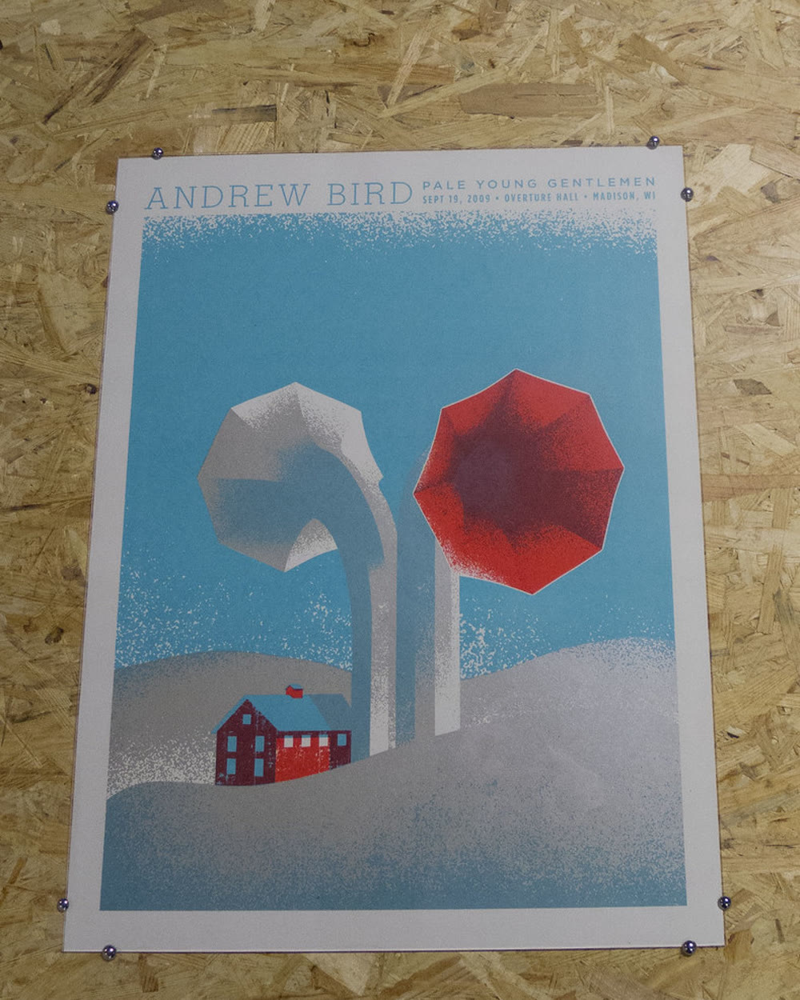
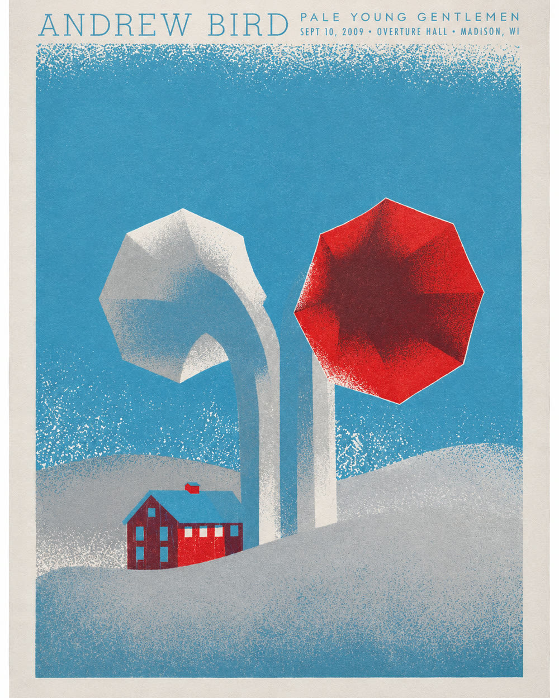
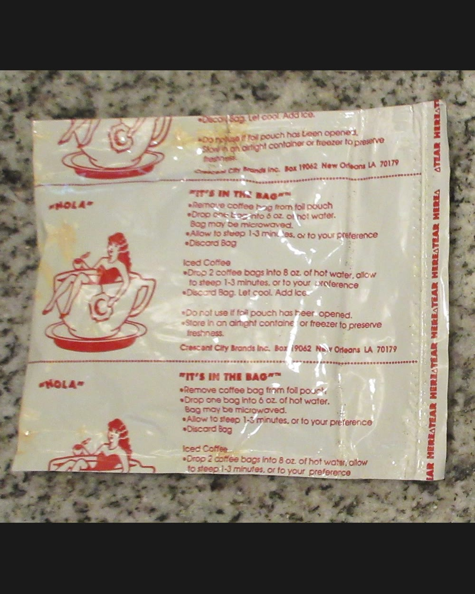
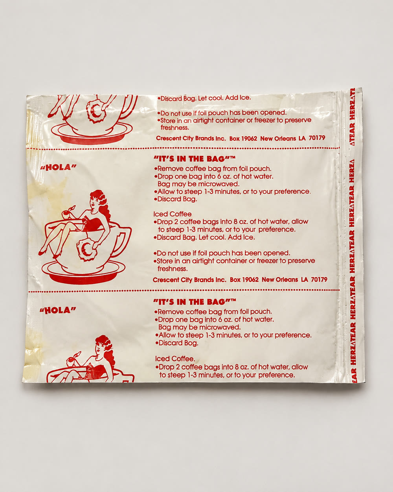
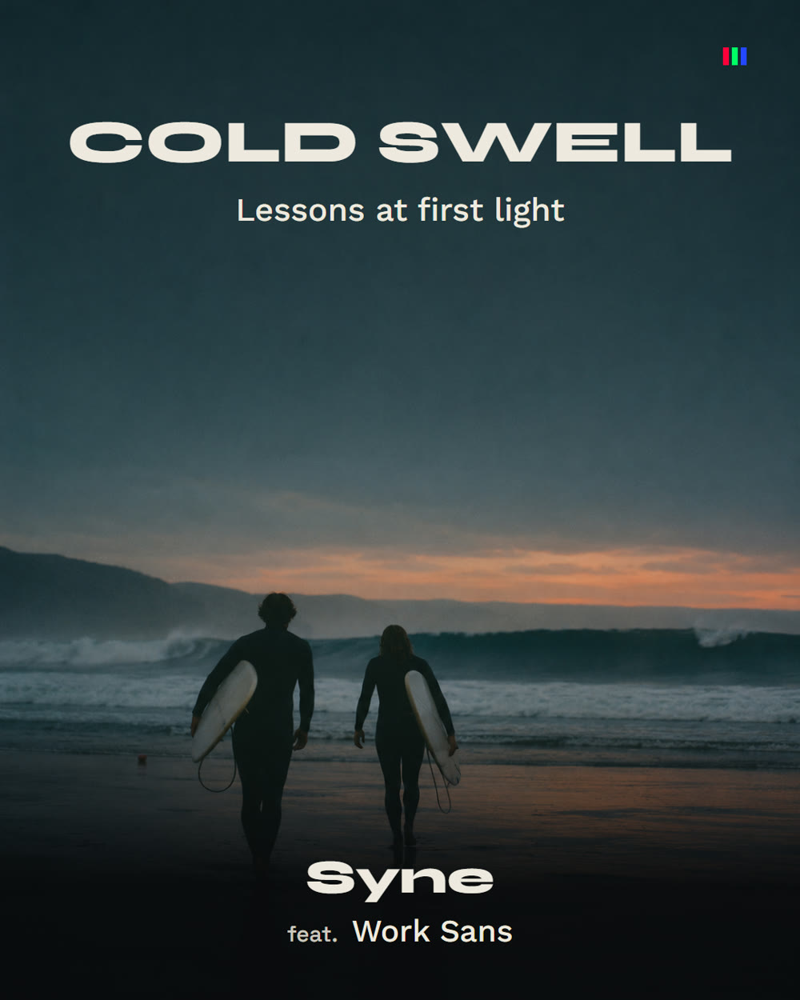
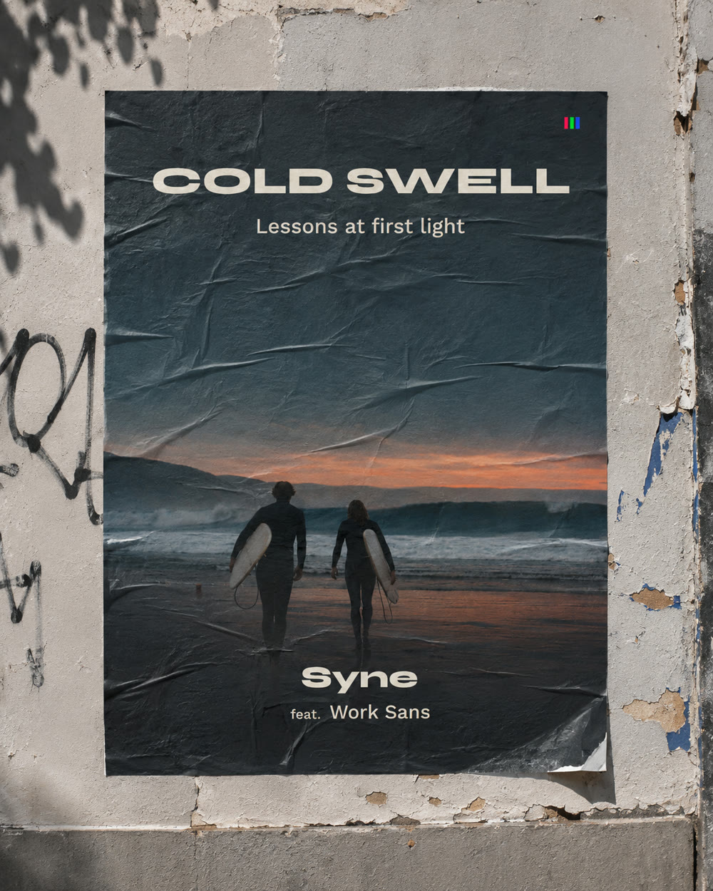
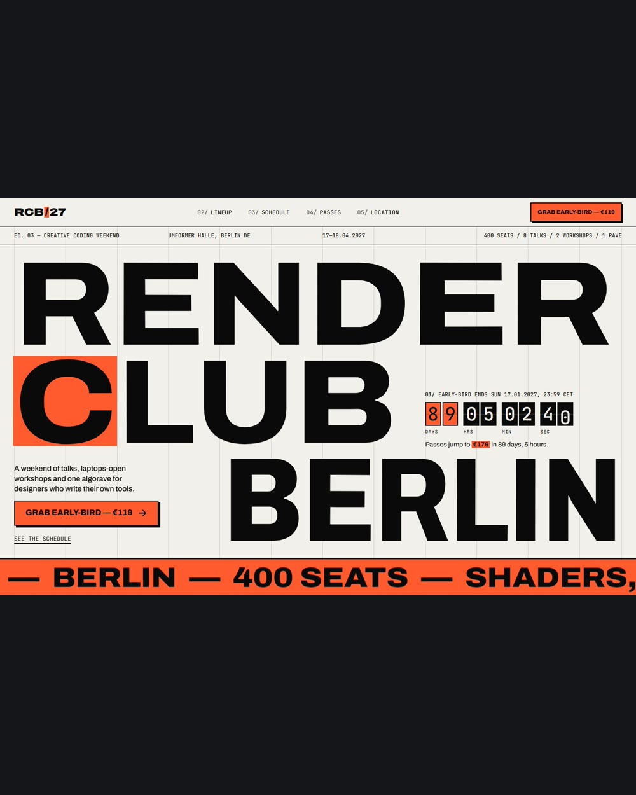
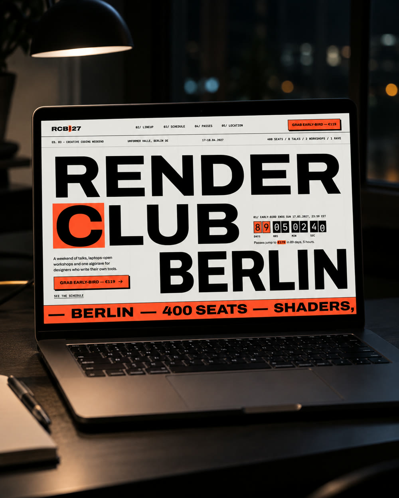
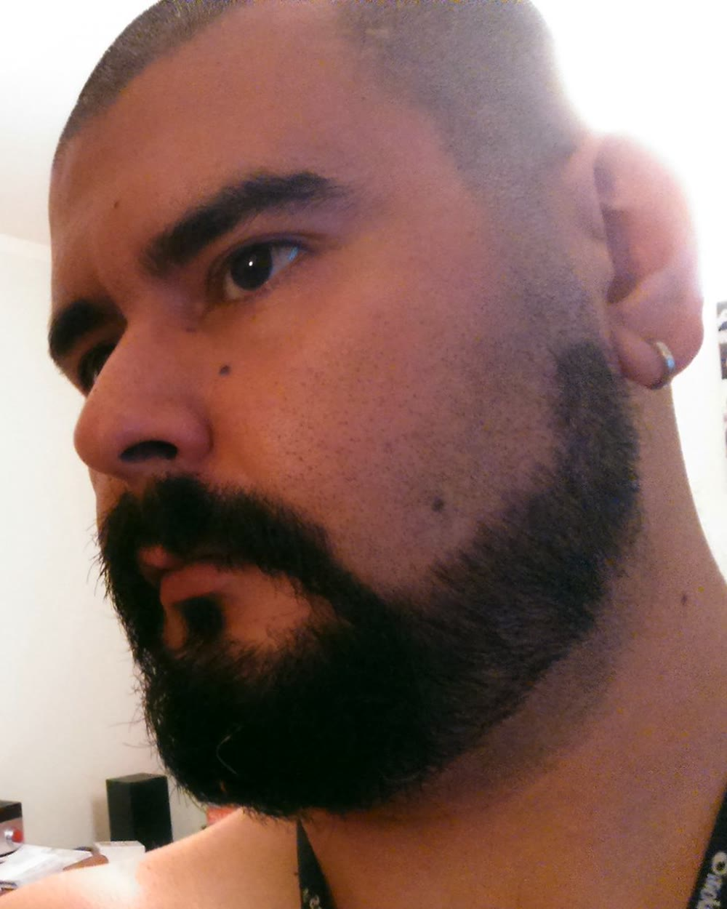
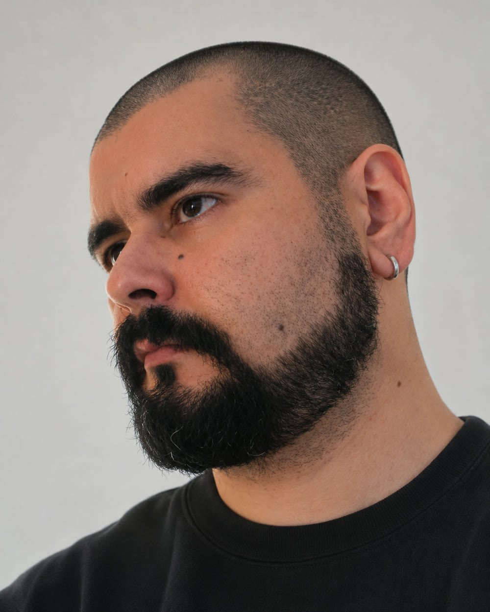

SLASH #01 · ChatGPT codes for designers
Portfolio photos, one slash away.
5 codes that turn rough photos of your work into portfolio shots. ChatGPT doesn't know them out of the box: the setup below teaches it what each one means. Paste it once, then drop an image and type a code.
How it works
- Paste the setupQuick: as the first message of a new chat (works for that chat). Permanent: in the instructions of a ChatGPT Project, so every chat inside it knows the codes.
- Drop an image + type a codeTyping “/” opens ChatGPT's own menu. Keep typing, it closes and your code stays.
- Add a word if you wantAnything after the code is a note:
/screen laptop,/wall bus stop.
The setup block
You are my portfolio photo assistant. When I send an image with a code starting with "/", apply the matching edit below and return the edited image. No questions, no explanations. GLOBAL RULE (applies to every code): keep my artwork, text, logos and face EXACTLY as they are: same layout, same letters, same colors, nothing added or redrawn. Don't add any props, logos or branding that aren't in my image. Always return a 4:5 portrait image. Always use image generation, never code or cropping. If something can't be kept identical, tell me instead of inventing it. /scan = I upload a phone photo of a printed piece. Return a flat, straight-on scan: perspective corrected, cropped to the piece, even light, no shadows or glare, original paper texture kept. /studio = I upload a photo of an object I designed. Return a studio product shot of the same object: seamless neutral background, soft key light, gentle shadow. /wall [place] = I upload a graphic. Return a documentary photo of it printed and pasted in a real place (default: a city wall), natural daylight, slight paper wrinkles. /screen [device] = I upload a screenshot. Return the device (default: a phone) held in one hand in a dark room, cinematic low-key light, the screenshot shown on the screen pixel-exact. /headshot = I upload a selfie. Return an editorial portrait for an About page: same face and features, soft window light, plain background. Anything I write after the code is an extra note for that edit.
The 5 codes
Drag the yellow line to compare. Every “after” below is a real ChatGPT result from our test, not a mockup.
/scan
A crooked phone photo of your printed poster becomes a flat, straight scan.
Use it for: posters, covers, prints you only have as a phone photo.


BeforeAfter/studio
Something you designed, shot on the kitchen counter, becomes a clean studio product shot.
Use it for: packaging, labels, merch, books, business cards.


BeforeAfter/wall [place]
Your poster file, printed and pasted on a real wall.
Use it for: posters and flyers that never got printed. Try /wall bus stop or /wall shop window.


BeforeAfter/screen [device]
A flat screenshot of your site becomes a moody device shot.
Use it for: websites and apps. Default is a phone; for desktop sites type /screen laptop.


BeforeAfter/headshot
A random selfie becomes a portrait for your About page. Same face.
Use it for: About pages, speaker bios, LinkedIn.


BeforeAfterTips & limits
- Check small text before you post. These are generated images. In our test /scan kept the poster but changed its date from “Sept 19” to “Sept 10”. Big titles held up, tiny lines can change.
- If it only crops, ChatGPT used code instead of image generation. Add a note:
/studio use image generation. - Start from the sharpest image you have. The code can fix light and angle, not missing detail.
- Image limits depend on your ChatGPT plan. We ran these tests on ChatGPT Go.
- Label it honestly. A /wall or /screen shot is a mockup, not a photo of a real print or launch.
More codes are coming
SLASH is a series of ChatGPT codes for designers. Next sets: client work, branding, UI copy.
Follow @thenotorious.rgb